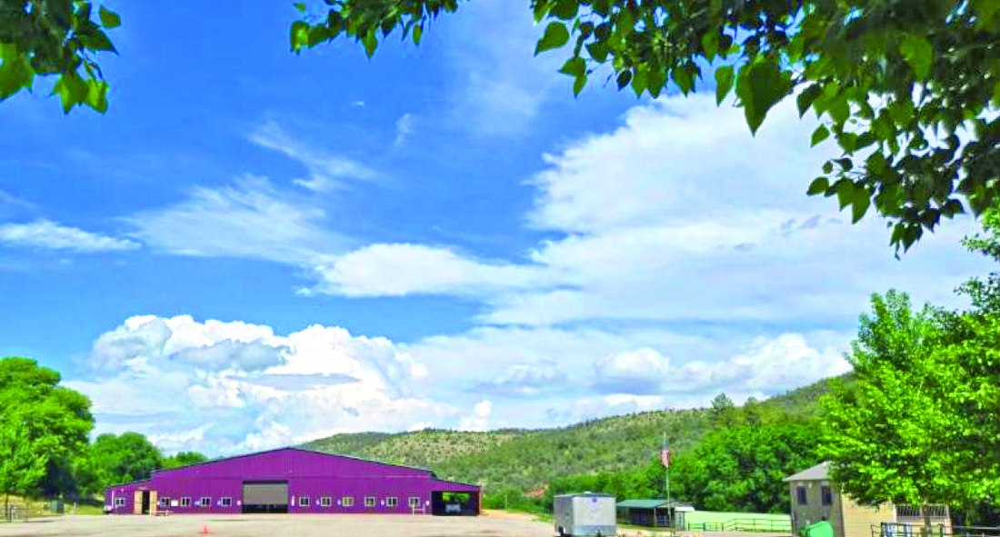
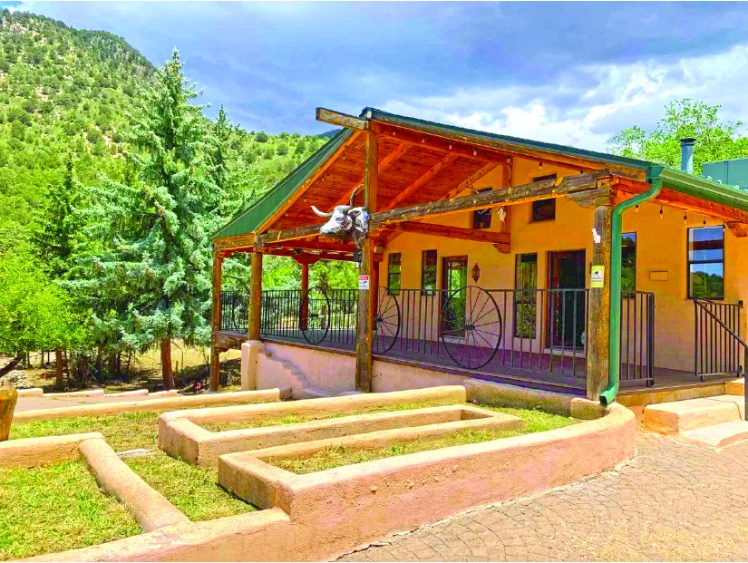

$2,900,000
Property in Cloudcroft
10,000 sq ft
Cloudcroft, New Mexico
MLS #171924
$2,900,000
Property in Cloudcroft
10,000 sq ft
Cloudcroft, New Mexico
MLS #171924

3705 US Highway 82, NM
$3,200,000
| Price | $3,200,000 |
|---|---|
| Land | 93.5 acres |
| Address | 3705 US Highway 82, NM |
| Listed by | Teague Ranch Real Estate |
| Print edition | October 2026 Otero County Edition, page 7 |
About this property
High Country Horse Ranch & Arena — 3705 US Highway 82 — 93.5 Acres High Country Horse Ranch & Arena Live Water • Irrigated Meadows • Premier Equestrian Facilities • Income Potential 3705 US Highway 82 • 93.5 Acres • $3,200,000 Welcome to High Country Horse Ranch & Arena A remarkable New Mexico equestrian estate where exceptional horse facilities, live water, and breathtaking mountain scenery come together to create a truly one-of-a-kind property. Whether you’re looking for a private horse ranch, an event facility, a boarding operation, or an investment with multiple income streams, this turnkey ranch offers endless possibilities. Teeming with life, the vibrant Rio Peñasco winds through the ranch, providing year-round live water that nourishes lush irrigated meadows while creating outstanding habitat for fish, waterfowl, elk, deer, turkey, and a variety of native wildlife. The ranch includes valuable water rights and is further supported by two productive water wells, ensuring dependable water for the ranch, livestock, equestrian facilities, and the established RV park. Bordering the majority of the ranch, the Lincoln National Forest offers direct access to miles of scenic mountain trails, making this an exceptional destination for trail riding, hiking, hunting, and year-round outdoor recreation in the majestic Sacramento Mountains. Located within the highly sought-after Game Management Unit 34, the property has historically received two elk tags, making it equally attractive to sportsmen and outdoor enthusiasts. At the heart of the ranch stands an outstanding 295’ × 175’ covered equestrian complex, encompassing approximately 51,625 square feet. Inside is a spacious 170’ × 120’ arena with premium sand footing designed for multi-event use, providing an ideal environment for training, competitions, clinics, and recreational riding regardless of the weather. The horse facilities have been thoughtfully designed for efficiency and comfort and include: a lighted 60-foot round pen, 16 covered box stalls, rubber mat flooring, Priefert feeding system, wash rack, horse stocks, tack storage, hay and feed storage, loafing sheds and five arena-adjacent livestock holding pens. The property also features a well-maintained three-bedroom, two-bath manager’s home with an attached two-car garage and workshop. Also included are painted pipe cattle working pens complete with squeeze chute and trailer load-out. Multiple elevated homesites throughout the ranch provide outstanding opportunities to build a custom residence overlooking the river, meadows, and surrounding mountains.Adding significant business potential, the ranch includes a well-established 16-space RV park with both 30-amp and 50-amp service, along with shower and laundry facilities. Combined with horse boarding, training, clinics, events, or recreational tourism, the property offers multiple opportunities for immediate income. High Country Horse Ranch & Arena is a rare opportunity to own one of New Mexico’s premier equestrian properties—combining live water, irrigated fields, National Forest access, exceptional horse facilities, abundant wildlife, and income-producing improvements in a spectacular mountain setting. Whether your vision is a private ranch, commercial equestrian operation, or legacy investment, this turnkey property your new home today.
Interested in this property?
Joe Teague
Phone: 575-910-8241
Email: joe@t-r-r.com
Teague Ranch Real Estate
Please contact the listing agent or company directly. The Real Estate Roundup is a publisher and does not show or sell properties.
Listing details and photo reproduced from the October 2026 print edition of The Real Estate Roundup (page 7), as printed. Prices and availability can change after publication — confirm with the listing agent.
More Homes
$2,900,000
Property in Cloudcroft
10,000 sq ft
Cloudcroft, New Mexico
MLS #171924

$3,995,000 4 Bedroom 400.0 Acre Property 4 bd · 3.5 ba · 4,000 sq ft · 400.0 acres MLS #172988 $2,200,000
163 Karr Canyon Rd
126.0 acres
High Rolls, New Mexico
MLS #172448
$2,200,000
163 Karr Canyon Rd
126.0 acres
High Rolls, New Mexico
MLS #172448
 $1,970,000
Property in Sixteen Springs
Sixteen Springs, New Mexico
MLS #172823
$1,970,000
Property in Sixteen Springs
Sixteen Springs, New Mexico
MLS #172823
 $1,592,000
5344 Red Lake Road, Fort Sumner, NM
1705.0 acres
$1,592,000
5344 Red Lake Road, Fort Sumner, NM
1705.0 acres
 $1,580,000
33.0 Acre Property in Cloudcroft
33.0 acres
Cloudcroft, New Mexico
MLS #171070
$1,580,000
33.0 Acre Property in Cloudcroft
33.0 acres
Cloudcroft, New Mexico
MLS #171070